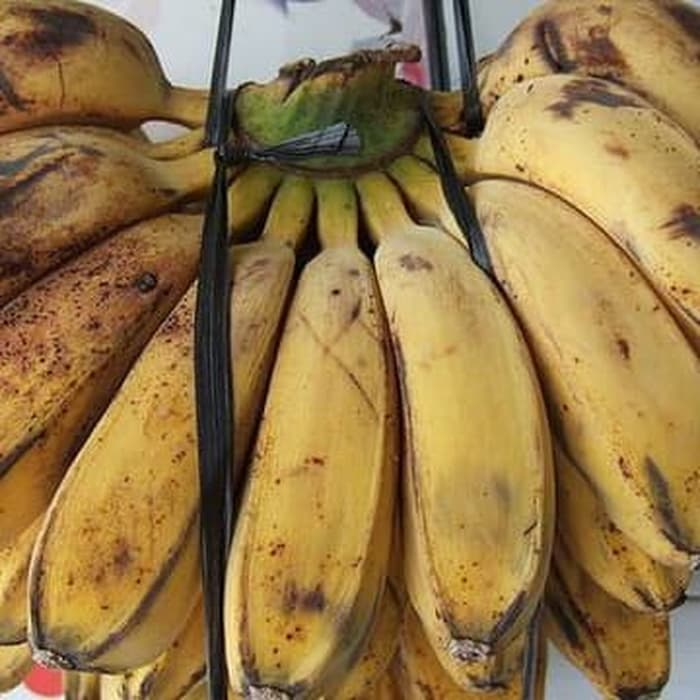

<< kembali ke Daftar Menu
Mengenal Bahan Makanan
Pisang Kepok

Pisang kepok adalah salah satu kultivar pisang dari kelompok kultivar ABB. Pisang ini termasuk kelompok pisang olah (plantain) karena tinggi kandungan patinya.
Pisang kepok dikenal pula di daerah-daerah lain sebagai berikut:
- Filipina: Saba, Sab-a, Cardaba
- Bali: Biu gedang saba
- Malaysia: Pisang Nipah atau Pisang Abu
- Ilocano: Dippig
- Thai: Kluai Hin
- Hawaii: Opu-’ulu, Dippig (dari Ilocano)
Kembali